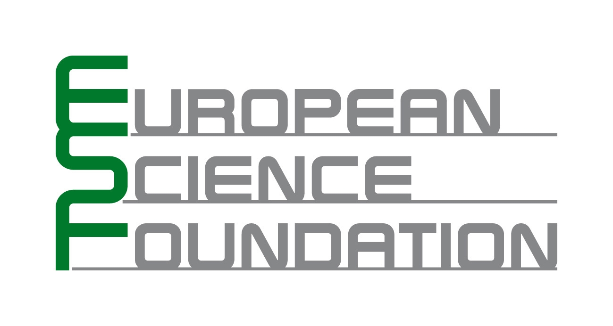

|
|
|
LogICCC Tutorial Day
This event, as part of the European Science Foundation EUROCORES Programme LogICCC
(read more about the
LogICCC Programme of the European Science Foundation), is supported by funds from AKA, DASTI, DFG, FCT, FWF, FNRS, GACR, ISF, MICINN, NWO, NZZ, TÜBITAK, and VR.
An introductory tutorial will be given by:
-
Vincent Conitzer (Duke University): A Brief Introductory Tutorial
on Computational Social Choice
Invited tutorials will be given by:
-
Agnieszka Rusinowska (CNRS - Université Paris 1 Panthéon-Sorbonne): Different Approaches to Influence in Social Networks
-
Nicolaus Tideman (Virginia Tech): Some Research Problems in
Computational Social Choice
-
Toby Walsh (University of New South Wales): Where are the Hard Manipulation Problems?
In addition, there will be a special LogICCC session right after the
tutorials with the following short talks:
- Rudolf Berghammer and Stefan Bolus. Problem Solving on Simple Games
via BDDs
- José Luis García-Lapresta and David Pérez-Román. Consensus Measures Generated by Weighted Kemeny Distances on Linear Orders
- Sara L. Uckelman and Joel Uckelman. Strategy and Manipulation in
Medieval Elections

|